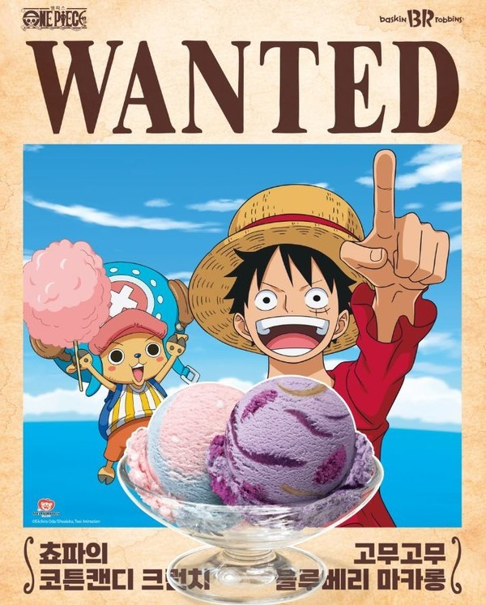

One Piece × Baskin-Robbins
A summer built around the Straw Hats — flavours, blasts, cakes and beach goods.밀짚모자 일당으로 만든 여름 — 플레이버, 블라스트, 케이크, 그리고 비치 굿즈.



- Client
- Baskin-Robbins Korea
- Location
- Seoul, Korea
- Campaign
- July 2026
- Role
- Creative Marketing Team Lead
- Scope
- IP sourcing, campaign theme, flavour and beverage direction, cake line, merchandise
July is the month the category is decided. Peak season rewards whatever is loud enough to be photographed, so the brief was less about a flavour than about a world people would want to be inside.
The cast did the work: Chopper on the flavour of the month, Luffy and Nami on the blast line with character picks, the Sunny and a treasure chest on cake. Goods moved the campaign out of the store and onto the beach, which is where the audience already was.
7월은 카테고리의 승부가 갈리는 달입니다. 성수기는 사진 찍힐 만큼 큰 것에 보상을 주기 때문에, 브리프는 플레이버보다 사람들이 들어가고 싶어 할 세계에 가까웠습니다.
캐릭터가 일을 했습니다. 이달의 맛은 쵸파, 블라스트 라인은 루피와 나미에 데코픽, 케이크는 써니호와 보물상자. 굿즈는 캠페인을 매장 밖 해변으로 옮겼습니다. 고객이 이미 가 있는 곳이었습니다.
ONE PIECE is © Eiichiro Oda / Shueisha, Toei Animation. Shown as client work.원피스는 © 오다 에이이치로 / 슈에이샤, 토에이 애니메이션. 클라이언트 작업으로 게재합니다.


Peak season belongs to whoever is worth photographing.성수기는 찍을 만한 쪽이 가져갑니다.